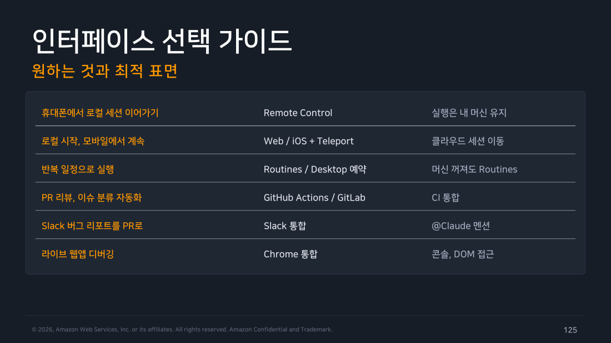
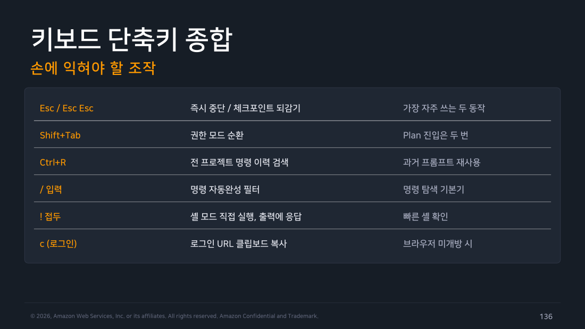

Part 7 — 인터페이스¶
한 줄 요약¶
표면은 달라도 엔진과 설정은 하나입니다. "무엇을 하고 싶은가"에서 출발해 표면을 고르고, 세션은 teleport와 remote로 환경 사이를 자유롭게 옮깁니다.
왜 알아야 하나¶
Claude Code를 CLI 도구로만 알고 있으면 이런 상황에서 막힙니다.
- 빌드가 40분 걸리는데 그동안 노트북을 못 닫는다
- 출근길에 어제 작업이 어디까지 갔는지만 확인하고 싶다
- 슬랙에 올라온 버그 리포트를 그대로 작업으로 넘기고 싶다
- 프론트엔드를 고쳤는데 실제 브라우저에서 되는지 확인시키고 싶다
이 문제들은 전부 다른 표면을 쓰면 풀립니다. 그리고 표면을 바꿔도 설정과 CLAUDE.md는 그대로 따라옵니다. Part 7은 그 지도입니다.
1. 무엇을 하고 싶은가에서 출발하기¶
인터페이스를 하나씩 훑는 것보다, 원하는 결과에서 거꾸로 찾는 게 빠릅니다.
flowchart TD
Q{"무엇을<br/>하고 싶은가?"}
Q -->|"휴대폰에서<br/>로컬 세션 이어가기"| A["<b>Remote Control</b><br/>실행은 내 머신 유지<br/>조작만 원격"]
Q -->|"로컬에서 시작,<br/>모바일에서 계속"| B["<b>Web / iOS + Teleport</b><br/>클라우드 세션으로 이동"]
Q -->|"반복 일정으로<br/>자동 실행"| C["<b>Routines</b> 또는 <b>Desktop 예약</b><br/>머신 꺼져도 도는 건 Routines"]
Q -->|"PR 리뷰·이슈 분류<br/>자동화"| D["<b>GitHub Actions / GitLab</b><br/>CI 통합"]
Q -->|"Slack 버그 리포트를<br/>PR로"| E["<b>Slack 통합</b><br/>@Claude 멘션"]
Q -->|"라이브 웹앱<br/>디버깅"| F["<b>Chrome 통합</b><br/>콘솔·DOM 접근"]
style Q fill:#673ab7,stroke:#4527a0,stroke-width:3px,color:#fff
style A fill:#e3f2fd,stroke:#1976d2,color:#000
style B fill:#e8f5e9,stroke:#388e3c,color:#000
style C fill:#fff3e0,stroke:#f57c00,color:#000
style D fill:#fce4ec,stroke:#c2185b,color:#000
style E fill:#ede7f6,stroke:#673ab7,color:#000
style F fill:#e0f2f1,stroke:#00796b,color:#000이제 각 표면을 하나씩 보겠습니다.

▲ 교재 슬라이드 125 — 인터페이스 선택 가이드 — 원하는 것과 최적 표면
2. VS Code와 Cursor — 에디터 안에서¶
설치¶
확장 마켓플레이스에서 "Claude Code"를 검색합니다. macOS는 Cmd+Shift+X, Windows·Linux는 Ctrl+Shift+X로 확장 패널을 엽니다.
설치 후에는 명령 팔레트(Cmd+Shift+P)에서 "Claude Code"를 찾아 Open in New Tab을 선택하면 됩니다.
Cursor도 같은 확장을 씁니다. 직접 링크로 설치하려면 vscode:extension/anthropic.claude-code 또는 cursor:extension/anthropic.claude-code를 씁니다.
필요한 건 Claude 구독 또는 서드파티 공급자 계정 하나뿐입니다. CLI에서 쓰던 설정과 CLAUDE.md가 그대로 공유되고, MCP 서버 구성도 동일하게 적용됩니다. 터미널 세션과 병행해서 써도 충돌하지 않습니다.
터미널 대비 뭐가 좋은가¶
네 가지가 다릅니다.
인라인 Diff가 가장 큰 차이입니다. 터미널에서는 제안된 변경을 통째로 y/n 해야 하지만, 에디터에서는 diff를 보면서 원하는 부분만 골라 수락할 수 있습니다.
@-mentions로 컨텍스트를 정확히 지목합니다. @파일명이나 @심볼명으로 "이거 말이야"를 명확히 전달할 수 있어서, 설명하느라 프롬프트가 길어지는 걸 막아줍니다.
Plan 검토가 편합니다. Plan 모드 산출물이 패널에 구조적으로 표시되어 항목별로 훑기 좋습니다.
대화 이력을 에디터 안에서 탐색하고 재개할 수 있습니다.
Tip
Part 5에서 "구체적 지시가 1회 성공률을 결정한다"고 했는데, @-mention이 그걸 물리적으로 쉽게 만들어줍니다. 경로를 손으로 타이핑할 필요가 없어집니다.
3. JetBrains — IntelliJ 계열¶
Marketplace에서 Claude Code 플러그인을 설치하고 IDE를 재시작합니다. 한 가지 주의할 점은 별도로 설치된 CLI가 필요하다는 것입니다. 플러그인만으로는 동작하지 않습니다.
설치하고 나면 IDE의 diff 뷰어로 변경을 검토하고 수락할 수 있고, 에디터에서 선택한 영역이 컨텍스트로 전달됩니다. 단축키는 IDE 키맵 체계에 통합되어 커스터마이즈할 수 있습니다.
IntelliJ, PyCharm, WebStorm 등 IntelliJ 계열 전체를 지원합니다.
4. Desktop 앱 — 병렬 세션의 본진¶
IDE와 터미널 밖의 독립 애플리케이션입니다. 여기가 다른 표면과 결정적으로 갈리는 지점은 병렬성입니다.
여러 세션을 동시에 굴리는데, 각 세션이 git으로 격리됩니다. 세션마다 별도 워크트리를 쓰기 때문에 서로의 변경이 섞이지 않습니다. 패널은 드래그 앤 드롭으로 배치합니다.
시각적으로도 충실합니다. diff 검토, 앱 프리뷰, 통합 터미널, 파일 에디터가 다 들어 있습니다.
Dispatch라는 기능도 있습니다. 휴대폰에서 작업을 보내면 데스크톱 세션으로 생성됩니다. 그리고 로컬 세션과 클라우드 세션을 한 화면에서 함께 운영할 수 있습니다.
macOS와 Windows를 지원하고 Linux는 베타입니다. CLI 세션을 데스크톱으로 넘기려면 /desktop 명령을 씁니다. PR 모니터링 기능도 내장되어 있습니다.
예약 실행 — 두 갈래¶
작업을 정해진 시각에 자동으로 돌리는 방법이 두 가지인데, 선택 기준이 명확합니다.
로컬 파일이 필요하면 Desktop 예약, 머신이 꺼져도 돌아야 하면 Routines.
Desktop Scheduled Tasks는 내 머신에서 실행됩니다. 로컬 파일과 도구에 직접 접근하므로 아침 코드리뷰나 야간 감사 같은 작업에 적합합니다. 단점은 명확합니다. 머신이 켜져 있어야 합니다.
Routines는 Anthropic 관리 인프라에서 돕니다. 노트북을 닫아도 스케줄이 유지됩니다. 시간 트리거뿐 아니라 API 호출이나 GitHub 이벤트로도 발동시킬 수 있습니다. CLI에서는 /schedule로 만듭니다.
5. Web — 설치 없이 클라우드에서¶
claude.ai/code에 접속해 GitHub 저장소를 연결하면 클라우드 세션이 시작됩니다. 아무것도 설치할 필요가 없습니다.
주된 용도는 두 가지입니다. 오래 걸리는 작업을 걸어두고 나중에 확인하거나, 여러 작업을 병렬로 돌리는 것입니다.
실행 환경은 Anthropic의 샌드박스 VM입니다. 셋업 스크립트와 네트워크 설정을 구성할 수 있습니다.
iOS 앱에서 같은 세션을 관리할 수 있어서 이동 중에도 진행 상황을 볼 수 있습니다.
그리고 /autofix-pr이라는 유용한 기능이 있습니다. CI 실패나 리뷰 코멘트에 자동으로 대응합니다.
결과는 PR로 회수됩니다. 즉 "작업을 던져두면 나중에 PR이 와 있는" 워크플로입니다.
6. 세션을 환경 사이로 옮기기¶
여기가 헷갈리기 쉬운 부분입니다. 명령이 세 개인데 방향이 각각 다릅니다.
flowchart LR
L["<b>내 머신</b><br/>(Local)"]
C["<b>클라우드</b><br/>(Anthropic VM)"]
B["<b>브라우저 / 폰</b><br/>(조작 화면)"]
C -->|"claude --teleport<br/><i>클라우드 → 로컬</i>"| L
L -->|"claude --remote<br/><i>로컬 → 클라우드</i>"| C
L <-.->|"/remote-control<br/><i>실행은 로컬, 조작만 원격</i>"| B
style L fill:#e8f5e9,stroke:#388e3c,stroke-width:2px,color:#000
style C fill:#e3f2fd,stroke:#1976d2,stroke-width:2px,color:#000
style B fill:#fff3e0,stroke:#f57c00,stroke-width:2px,color:#000# 웹·iOS에서 시작한 세션을 터미널로 가져오기 (클라우드 → 로컬)
claude --teleport
# 목록에서 클라우드 세션을 선택해 로컬에서 이어서 작업
# 터미널 세션을 클라우드로 보내기 (로컬 → 클라우드)
claude --remote "이 작업 계속 진행해줘"
기억법은 간단합니다. teleport는 가져오는 것, remote는 보내는 것, remote-control은 원격에서 조종만 하는 것입니다. 셋 다 claude.ai 연동 기능이라 구독이 필요합니다.
7. Slack — 팀 채팅에서 PR까지¶
채널에서 @Claude를 멘션하면 작업이 시작됩니다. 여기서 진짜 가치는 컨텍스트가 공짜라는 데 있습니다.
버그 리포트 스레드에서 멘션하면 그 스레드의 대화 내용이 그대로 작업 배경으로 전달됩니다. 상황을 다시 설명할 필요가 없습니다. 그리고 수정 결과는 PR 링크로 스레드에 회신됩니다.
대표적인 활용은 버그 트리아지, 온콜 보조, 반복 질문 응대 자동화입니다.
현장 메모
운영 관점에서 가장 실용적인 건 온콜 보조입니다. 장애 스레드에서 바로 로그 분석을 위임할 수 있고, 스레드 맥락이 컨텍스트로 넘어가므로 "지금 상황이 이러이러한데"를 다시 타이핑할 필요가 없습니다. Part 10의 실습 기록에서 로그 분석을 실제로 돌려봤는데, 원인 후보만 나열하는 게 아니라 감별 진단 방법까지 제시했습니다. 그게 스레드 안에서 나온다고 생각하면 됩니다.
8. Chrome — 라이브 웹앱 직접 조작 (Beta)¶
Chrome 브라우저에 연결해 실제 페이지를 조작합니다. 확장을 설치한 뒤 /chrome으로 연결을 설정합니다.
콘솔 에러와 네트워크 요청을 읽어 원인을 추적하고, 구현한 UI를 실제로 클릭하고 입력해서 동작을 확인합니다. 반복 입력이나 데이터 추출 같은 자동화도 됩니다.
프론트엔드 작업에서 "구현했으니 이제 확인해봐"까지 한 세션 안에서 끝난다는 게 핵심입니다. Part 9의 Visual Workflow 패턴과 짝을 이룹니다.
9. 터미널을 쓴다면 이건 꼭 설정하세요¶
CLI 사용감을 크게 바꾸는 설정이 몇 개 있습니다. 특히 첫 번째는 선택이 아니라 필수에 가깝습니다.
Shift+Enter 줄바꿈을 먼저 매핑하세요. terminal-config 절차를 따라 키를 매핑합니다.
왜 이게 가장 중요한가
이 매핑이 없으면 여러 줄 프롬프트를 아예 쓸 수 없습니다. Enter를 누르는 순간 전송되니까요. 그러면 지시가 계속 한 줄로 짧아지고, 결국 Part 5에서 강조한 "범위 + 금지 조건 + 완료 기준"을 담을 수가 없습니다. 구체적 지시의 물리적 전제조건이라고 보면 됩니다.
완료 알림 벨을 켜두면 장시간 작업을 백그라운드로 돌릴 수 있습니다. 작업이 끝나면 터미널이 알려주니 다른 일을 하다 돌아오면 됩니다.
Vim 모드는 /config에서 편집 키 바인딩을 전환합니다. Vim 사용자라면 이질감이 사라집니다.
풀스크린 렌더링은 깜빡임 없이 그려주고 마우스도 지원합니다. /focus 뷰를 쓸 수 있습니다.
상태줄(statusline) 에 컨텍스트 사용량, 비용, git 브랜치를 띄워두면 세션 상황이 항상 보입니다.
손에 익혀야 할 단축키¶
가장 자주 쓰는 두 개부터 외우면 됩니다. Esc는 즉시 중단, Esc 두 번은 체크포인트 되감기입니다. 이 둘만 알아도 겁 없이 시킬 수 있습니다.
그다음이 Shift+Tab입니다. 권한 모드를 순환하며, Plan 모드로 가려면 두 번 누릅니다.
명령을 찾을 때는 /를 입력하면 자동완성 필터가 뜹니다. 과거에 썼던 프롬프트를 다시 쓰려면 Ctrl+R로 전 프로젝트 명령 이력을 검색합니다.
셸 명령을 빠르게 확인하고 싶으면 !를 앞에 붙여 셸 모드로 직접 실행할 수 있고, 그 출력에 이어서 대화할 수 있습니다.
로그인 시 브라우저가 안 열리는 환경이라면 c를 눌러 로그인 URL을 클립보드에 복사합니다.

▲ 교재 슬라이드 136 — 키보드 단축키 종합
직접 해보기¶
# 1. 설정이 정말 공유되는지 확인
# 터미널에서 CLAUDE.md 를 만든 뒤, 같은 프로젝트를 VS Code 에서 열고:
# "이 프로젝트의 테스트 명령은?" 질문 → 같은 답이 나오면 성공
# 2. 터미널 최적화
> /config
# Shift+Enter 줄바꿈, 상태줄, 편집 키 바인딩 확인
# 3. 단축키 감각 익히기
# Shift+Tab 으로 Default → Accept Edits → Plan 순환 (기본 3종)
# Auto 는 계정 요건을 충족할 때만 순환에 추가됩니다
# Ctrl+R 로 과거 프롬프트 검색
정리¶
표면은 CLI / VS Code·Cursor / JetBrains / Desktop / Web·iOS / Slack / Chrome 으로 여럿이지만 엔진과 설정은 하나입니다.
에디터 확장의 차별점은 인라인 diff의 부분 수락과 @-mention 컨텍스트 지목입니다.
Desktop 앱의 핵심은 병렬 세션 + git 격리이고, 예약 작업은 로컬(Desktop)과 관리형(Routines)으로 갈립니다. 기준은 "머신이 꺼져도 돌아야 하는가"입니다.
세션 이동 세 명령의 방향을 구분하세요. --teleport는 가져오기, --remote는 보내기, /remote-control은 조작만 원격입니다.
터미널을 쓴다면 Shift+Enter 줄바꿈 매핑을 가장 먼저 하세요. 구체적인 지시를 쓸 수 있느냐가 여기 달려 있습니다.
출처¶
- Claude Code Deep Dive Workshop — Chapter 1 / Part 7: Interfaces (14p)
- 공식 문서: Claude Code on the web · Desktop · Slack · Terminal configuration · Interactive mode